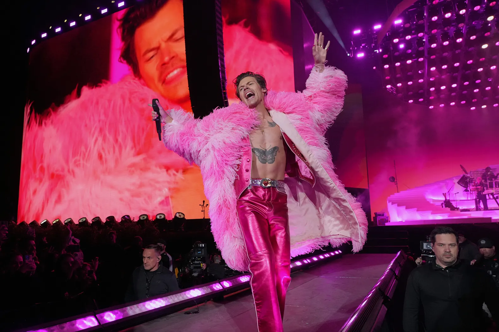
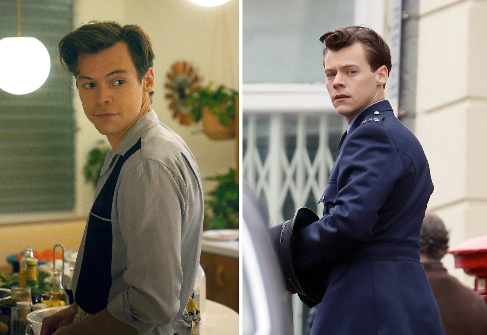
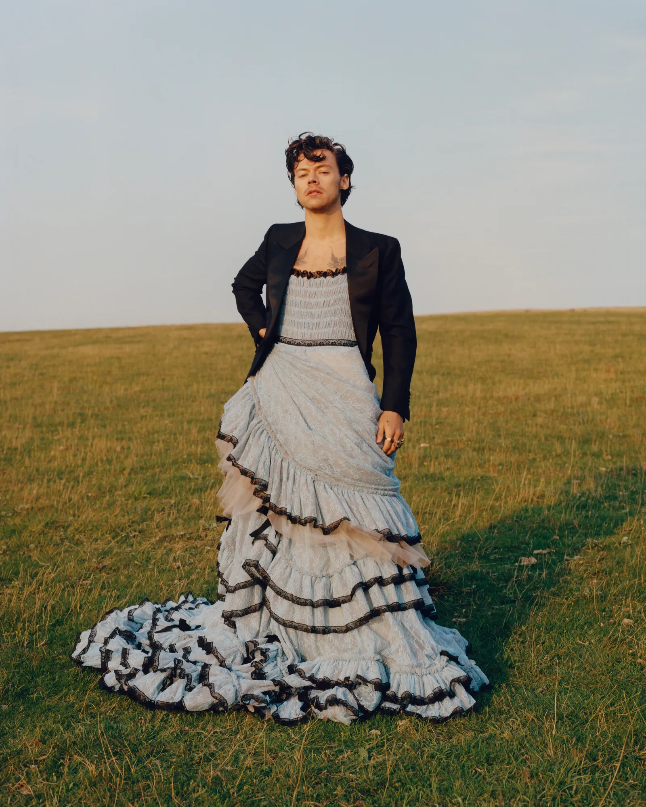

Harry styles is English singer, songwriter, and actor. Known for his influence in popular culture, showmanship, artistry, and philanthropy, he is a subject of widespread public interest with a vast fanbase. Styles is considered to be among the most successful solo artists who have emerged from a boy band.
Styles's musical career began in 2010 as part of One Direction, a boy band formed on the British music competition series The X Factor after each member of the band had been eliminated from the solo contest. They became one of the best-selling boy bands of all time before going on an indefinite hiatus in 2016
Styles released his self-titled debut solo album through Erskine and Columbia Records in 2017. It debuted at number one in the UK and the US and was one of the world's top-ten best-selling albums of the year, while its lead single, "Sign of the Times," topped the UK Singles Chart.
One Direction

Styles auditioned as a solo contestant for the seventh series of the British televised singing competition The X Factor, singing a rendition of Stevie Wonder's "Isn't She Lovely." He advanced to bootcamp but failed to progress further. Four others in his age group who were also eliminated were put together to form a boy band in July 2010 to compete in the "Groups" category, mentored by Cowell.
The group consisting of Styles, Niall Horan, Liam Payne, Louis Tomlinson, and Zayn Malik practised for two weeks; Styles suggested the name One Direction to his colleagues which they agreed to. They began to gain considerable popularity in the UK, and within the first four weeks of the live shows, were Cowell's last act in the competition. The group eventually reached the final of The X Factor and finished in third place.
In January 2011, One Direction signed a recording contract with Cowell's label Syco Records. Their UK number one debut single, "What Makes You Beautiful," and their debut studio album, Up All Night, were released later that year. The album, which contained three songs co-written by Styles, debuted at number one in the United States. Their four succeeding studio albums—Take Me Home (2012), Midnight Memories (2013), Four (2014) and Made in the A.M. (2015)—all debuted at number one in the UK. Midnight Memories was the world's best-selling album of 2013, and its accompanying Where We Are Tour was the highest-grossing tour of 2014.
Solo Career

As a solo artist, Styles joined Jeffrey Azoff's Full Stop Management and talent agency CAA, signing a recording contract with Columbia Records in the first half of 2016. In March 2017, he announced that his first solo single, "Sign of the Times," would be released on 7 April. The song peaked at number one on the UK Singles Chart and number four on the Billboard Hot 100. Rolling Stone ranked "Sign of the Times" as the best song of 2017.[55] Its music video featured Styles flying and walking on water and won the Brit Award for British Video of the Year.
His self-titled debut album was released in May 2017, whereupon it debuted at number one in several countries, including Australia, the UK and the US. It received generally favourable reviews from critics and was included in several publications' lists of the best albums of 2017. Harry Styles yielded two more singles, "Two Ghosts" and "Kiwi." Styles embarked on his first headlining concert tour, Harry Styles: Live on Tour, from September 2017 through to July 2018, performing in North and South Americas, Europe, Asia, and Australia.
"Lights Up," the lead single from Styles's second album, Fine Line, was released in October 2019, debuting at number three in the UK. The second single preceding Fine Line, "Adore You," was released in December, peaking at number seven in the UK and at number six in the US. Fine Line was released on 13 December. "Watermelon Sugar" became Styles's fourth UK top-ten single, peaking at number four, as well as his first number-one single in the US. A tour to support Fine Line, entitled Love On Tour, which was originally set to take place throughout 2020, was postponed until 2021 due to the COVID-19 pandemic.
Acting Career

Styles made his feature film debut in Christopher Nolan's war film Dunkirk, in July 2017, playing a British soldier named Alex in the Dunkirk evacuation during World War II. Styles won the part over "thousands of young men;" Nolan later admitted he was unaware of the extent of Styles's fame and that he was cast "because he fit the part wonderfully and truly earned a seat at the table." Styles made a cameo appearance as Eros / Starfox, brother of Thanos, in the mid-credits scene of the Marvel Cinematic Universe superhero film Eternals, which was released in November 2021.
Styles starred alongside Florence Pugh in the 2022 psychological thriller film Don't Worry Darling, directed by Olivia Wilde. Having premiered at the 79th Venice International Film Festival, the film, as well as his performance, received mixed reviews. Also in 2022, Styles starred alongside Emma Corrin in My Policeman, a film adaptation of the 2012 novel of the same name which premiered at the Toronto International Film Festival.At the 2022 TIFF Tribute Awards, the main cast of the film were awarded the TIFF Tribute Award for Performance.
Fashion Status

Styles wore skinny jeans, sheer blouses, floral prints, flamboyant suits and ankle boots while in One Direction. Nicole Saunders of Billboard noted that his fashion had "blossomed from a teen wearing purple Jack Wills hoodies to a carefully executed blend of '70s rock with a glamorous magpie feel" over the course of the group's five-year stint. During the band's 2014 Four era, Styles began collaborating with stylist Harry Lambert.[279] In 2016, he was featured in Another Man magazine.
As a solo artist, Styles has opted for "candyfloss" custom pink suits, sequined tops, printed satin flares and a Gucci-heavy aesthetic.Vanity Fair's Erika Harwood stated that Styles went from "boy-bander" to "luxury suit connoisseur" in describing his change in style. Styles began wearing sweater vests, baggy high-waisted pants and pearl necklaces in 2019,[285] which prompted Jacob Gallagher of The Wall Street Journal to call him the "popularizer of the manly pearl necklace."
In 2020, Styles became the first man to appear solo on the cover of Vogue, for its December issue.[288] Right-wing commentators criticised him for wearing a blue Gucci dress on the cover;[289][290] Candace Owens demanded that society must "Bring back manly men." Styles responded to the criticism by saying, "To not wear [something] because it's females' clothing, you shut out a whole world of great clothes" and "what's exciting about right now is you can wear what you like" as lines "are becoming more and more blurred." In 2022, Styles designed a joint capsule collection with Gucci's then-creative designer Alessandro Michele entitled "Ha Ha Ha" after their first initials and the way they traditionally signed off their messages to one another over the years.